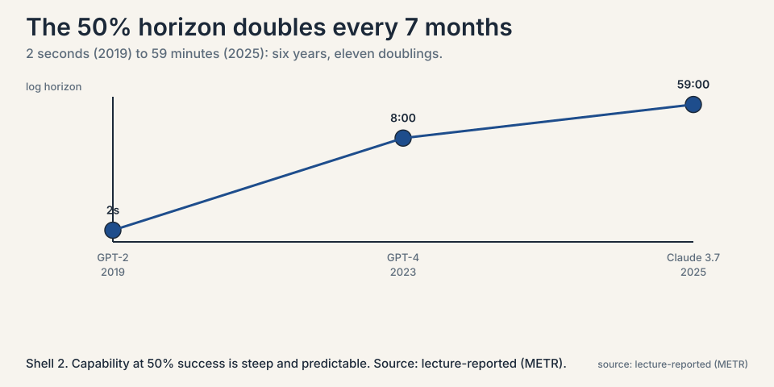
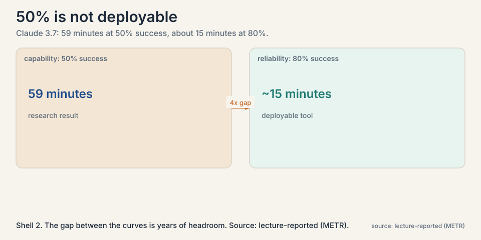
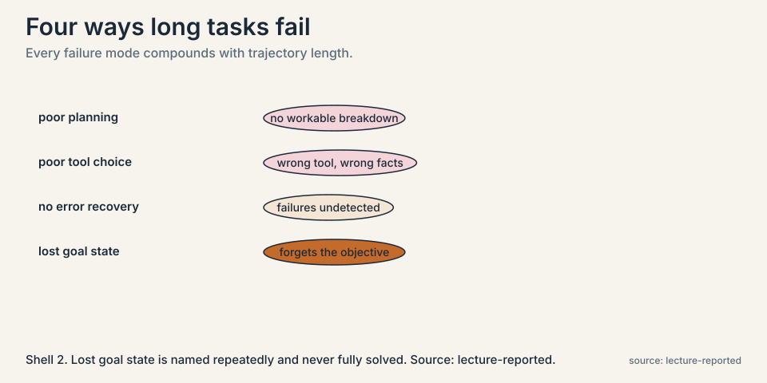
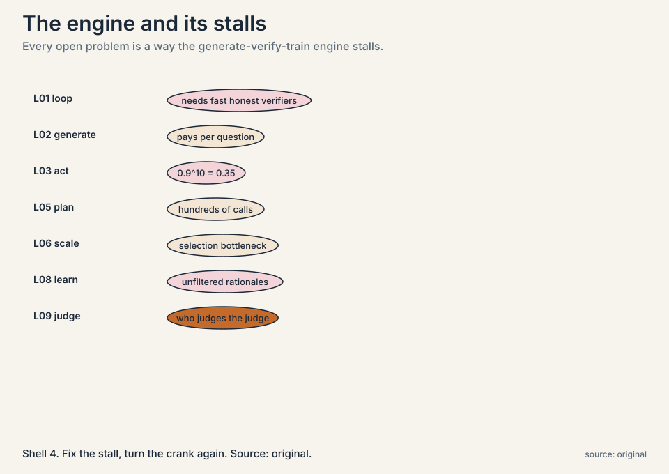
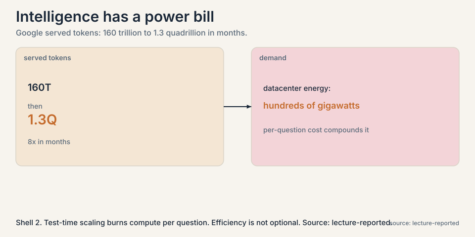

Lecture 10: Measuring Agents and the Road Ahead
Video blocked (ad-blocker or local file mode).
Watch on YouTubeVideo not loading? Watch on YouTube
Aakanksha Chowdhery on METR time horizons, GDPval, DeepScholar-Bench, and the failure modes of long-horizon agents. Part 9 (recap and open problems) is embedded below.
The problem: benchmarks say “better”, users say “unreliable”
Every method in this course reports wins: higher coverage, better pass rates, climbing proof scores. But ask anyone who has delegated a real afternoon of work to an agent, and the report is different: it sometimes works, sometimes wanders, sometimes confidently finishes the wrong task. Benchmark scores and lived reliability disagree. This chapter is about measuring what actually matters: how long a task an agent can complete, and how reliably.
Subchapter: agentic evals versus QA benchmarks
An agentic evaluation differs from a question-answering benchmark in one way: the task takes time. Not seconds, but minutes to hours of skilled human work: debugging a real repository, reproducing a machine learning result, planning under constraints. The unit of difficulty is the time horizon: how long the task would take a skilled human.
QA benchmarks measure knowledge. Agentic evals measure what the model can do with that knowledge over time: plan, act, recover, persist. A model can ace a QA benchmark about debugging and still fail to debug a real repository, because the repository task needs an hour of sustained, error-prone work and the benchmark needs one right answer.
The measurement, worked concretely
The METR methodology the lecture presents works like this. Take a battery of tasks spanning seconds to many hours. For each task, have skilled professionals, roughly five years of experience, record how long successful completion takes, and take the geometric mean as the task’s difficulty rating. Then run models on the tasks and record the success rate at each horizon.

Subchapter: the methodology, deep
Three choices make the metric work. First, the geometric mean of expert times, not the arithmetic mean: task times are log-normally distributed, and the geometric mean is the right center for a multiplicative scale. Second, experts with about five years of experience: skilled enough that their times reflect the task, not their learning curve. Third, success rate at each horizon, not average score: the metric asks “can it finish”, not “how close did it get”.
Subchapter: the trend, worked
The headline numbers, read off the lecture’s trend line:
model (year) task horizon at 50% success GPT-2 (2019) 2 seconds GPT-4 (2023) 8 minutes Claude 3.7 (2025) 59 minutes
From 2 seconds to 59 minutes in six years. The doubling time is about 7 months: every 7 months, the task length the model handles half the time doubles. Six years is 72 months, about 10 doubling periods, and 2 seconds doubled 10 times is 2,048 seconds, 34 minutes, in the right ballpark of the measured 59. That is the capability trend, and it is steep.
Subchapter: the 80 percent gap
Now the number that matters for deployment. Redo the measurement at 80 percent success instead of 50:

Claude 3.7 (2025): 59 minutes at 50% success
~15 minutes at 80% success
An intern who completes hour-long tasks half the time, and 15-minute tasks most of the time. The lecture’s gloss: there is always uncertainty. Capability at 50 percent is years ahead of reliability at 80 percent. The gap between the two curves is the headroom the field has not closed, and it is large.
Subchapter: the methodology’s weak point
The lecture is also honest about the methodology’s weak point. Experts underestimate task difficulty: people fluent in a field are conditioned to what success looks like, and their times do not reflect how hard the task feels to a model. Human difficulty and model difficulty are different rulers. A task that takes an expert 10 minutes because she knows exactly where to look can take a model an hour of fumbling. The horizon numbers are in human-minutes, and the translation to model-minutes is lossy.
Where agents fail: the failure modes
The lecture walks through a failure-mode analysis comparing a non-reasoning model (GPT-4) with a reasoning model (o1).

Subchapter: poor planning
The model does not break the task into steps, or breaks it wrongly. It acts before it has a plan, or plans at the wrong granularity. Read against Lecture 5: this is what tree search addresses, by comparing plans before committing.
Subchapter: poor tool choice
Wrong tool, or right tool with a bad query. The trajectory grounds itself in the wrong facts. Read against Lecture 3: grounding in the wrong place is worse than no grounding, because the trace builds confidently on it.
Subchapter: no error recovery
Something goes wrong mid-task, as it always does in an hour-long task, and the agent cannot detect it or replan. It repeats the failing behavior. This is the compounding-error arithmetic of Lecture 3, now measured: 0.9^n with n in the dozens.
Subchapter: lost goal state
Over a long horizon the agent forgets what it is optimizing: no memory of the final goal, no sense of progress. It optimizes a subtask as if it were the task. The honest scorecard: planning gets LATS, tool choice gets grounding, error recovery gets reflection and retries. Lost goal state is named repeatedly and never fully solved. Memory structures for agents remain an open research area.
Subchapter: what drove the gains anyway
The lecture notes what has been driving the gains anyway: better reasoning, better code generation, tool use, less repetitive behavior, and crucially, context engineering, structuring what the agent sees across steps so the tools work better. Reliability engineering around the model, not just the model, moves the curves. The model gets the headlines. The harness gets the reliability.
Subchapter: GDPval and DeepScholar-Bench
Two more evals from the lecture, each probing a different weakness. GDPval measures win rate against experts with a decade of experience on real professional tasks. The top failure: instruction following. Under-specified prompts fall apart: the agent does something reasonable that is not what was wanted. The lesson: on expert tasks, the binding constraint is often the prompt, not the model.
DeepScholar-Bench tests research synthesis: no system scores above 19%. The failure pattern: foundational sources missed, fluency high, verifiability low. The models write beautiful literature reviews that cite the wrong papers or misstate what they say. Fluency and verifiability trade off, and current systems sit on the wrong end. Read it as the measurement of Lecture 7’s problem: the agents do not know what they do not know, and they write smoothly past the gaps.
The key question
If capability doubles every 7 months but reliability lags years behind, what are the actual open problems?
The road ahead, from the recap lecture
The course’s closing lecture names the frontier explicitly. Each item is a research problem, not a solved one.

Subchapter: diversity of reasoning chains
Self-improvement feeds on varied attempts. Keeping them diverse, across rounds of training, is unsolved. Multi-agent debate is a start. The deeper problem: every training method in the course is a filter, and filters converge. The loop eats its own diversity unless something actively maintains it.
Subchapter: breaking the verifier bottleneck
Everything needs fast, honest judges. Outcome checks are blind, model judges are gullible, and slow domains have no judges at all. Better verifiers improve everything downstream. The lecturers’ framing points here as the highest-impact open problem: every loop consumes verifier judgments, so a breakthrough in fast, trustworthy, process-level verification speeds up all of them at once.
Subchapter: data selection and curriculum
Only so much can be curated by humans. Which problems go into the loop, in which order, a curriculum, matters enormously and is barely studied. DAPO’s dynamic sampling is a first step: drop the prompts with no signal. But the full question, what sequence of problems teaches fastest, is open. The lectures treat it as the most underrated lever.
Subchapter: non-verifiable domains
Creative writing, open-ended design, science with slow experiments. The loop does not reach them today. Learned reward stand-ins invite hacking. Absolute Zero shows the pattern for escaping: find an executable verifier, even a narrow one, and the loop can turn. The open question is how far that pattern stretches.
Subchapter: the cost of intelligence
Test-time scaling burns compute per question. Demand is exploding: the lecture cites Google’s served tokens jumping from 160 trillion to 1.3 quadrillion in months, and data-center energy demand in the hundreds of gigawatts. Efficiency is not optional.

The recap adds the efficiency counterpoint: intelligence per watt. Local models at or under 20B parameters now cover most real chat queries. Not every question needs the frontier. The open problem is routing: knowing which questions earn the big model and which the small one answers fine. The cost curve and the capability curve are racing, and routing is where they meet.
And the through-line the lecturers keep returning to: the self-improvement loop, generate, verify, train, is the engine. Every open problem is a way the engine stalls. Fix the stall, turn the crank again.
Mapping back: the whole course in one table
| Chapter | Engine part | Core result | Honest price |
|---|---|---|---|
| L01 | The loop | Generate, verify, train | Needs fast honest verifiers |
| L02 | Generate | Log-linear coverage. Small beats big | Pays per question. Needs the check |
| L03 | Act | ReAct grounds thought in tools | Errors compound: 0.9^10 = 0.35 |
| L04 | Train on doing | RLEF: execution feedback to RL | Sparse binary signal. Tests required |
| L05 | Plan | LATS: tree search over plans | Hundreds of calls. Judge can mislead |
| L06 | Scale | AlphaCode: 10@k. Learned selectors | Selection bottleneck. Diversity engineered |
| L07 | Know | Agentic search fills gaps mid-thought | Trigger heuristics. Context budget |
| L08 | Learn | STaR: bootstrap reasoning from answers | Unfiltered rationales. Needs answer keys |
| L09 | Judge | Meta-verifier. Multi-agent debate | Human-seeded. Slow domains excluded |
| L10 | Measure | 7-month doubling. Reliability lags | 50% is not deployable |
The honest price, final
The course’s own measurement says the field is far from done. An agent that handles hour-long tasks half the time is a research result, not a coworker. The reliability gap, the verifier bottleneck, and the cost curve are the three walls. The doubling trend says the walls are moving. Nothing in the lectures says they fall on their own.
Go deeper
- Beth Barnes (METR) on the time-horizon graph: why the 50% horizon doubles every 7 months, and what the trend does and does not say. https://www.youtube.com/watch?v=jXtk68Kzmms
- CS329A Part 9: Future Research Areas (Autumn 2025): the recap lecture’s open problems. https://www.youtube.com/watch?v=AyO6wyu4DEg
- Kwa et al., Measuring AI Ability to Complete Long Tasks (METR, 2025): the methodology and the doubling trend. https://metr.org/blog/2025-03-19-measuring-ai-ability-to-complete-long-tasks/
The task length a model completes 50 percent of the time doubles roughly every 7 months: GPT-2 in 2019 managed 2 seconds, GPT-4 in 2023 managed 8 minutes, Claude 3.7 Sonnet in 2025 manages 59 minutes. Task difficulty is rated by the geometric mean of skilled professionals’ completion times. It is a capability trend, not a reliability claim. Because deployment needs reliability. At 80 percent success, Claude 3.7’s horizon drops from 59 minutes to about 15. The gap between the 50-percent curve and the 80-percent curve is years of headroom. An agent that finishes half its hour-long tasks is a demo. One that finishes 80 percent of 15-minute tasks is a tool. The field has the first, not the second.
Assemble tasks spanning seconds to many hours: debugging repos, reproducing ML results, constrained planning. For each, record completion times from professionals with about five years of experience and take the geometric mean as the difficulty rating. Run models on the battery and record success rate at each horizon. Read off the horizon where success hits 50%: that is the headline number. The geometric mean matters because task times are log-normal: the arithmetic mean would be dominated by the longest tasks. The human-to-model difficulty translation. Experts underestimate difficulty because fluency looks like ease, and tasks that are easy for experts (knowing where to look) can be hard for models (fumbling through search). The horizons are in human-minutes. The model-minutes equivalent is unknown and probably larger.
Four, from the lecture’s analysis. Poor planning: the task is not broken into workable steps. Poor tool choice: wrong tool or bad query grounds the trace in wrong facts. No error recovery: mid-task failures go undetected and un-replanned. Lost goal state: over long horizons the agent forgets the objective and optimizes a subtask. Every one of them compounds with trajectory length. Planning: LATS tree search. Tool choice: ReAct grounding, plus learned selectors in AlphaCode 2. Error recovery: reflection in LATS, retry loops in RLEF. Lost goal state: named repeatedly, never fully solved. Memory structures for agents remain an open research area. The honest scorecard is three partials and one open.
Different weaknesses. GDPval pits agents against decade-experience experts on professional tasks: the top failure is instruction following, and under-specified prompts fall apart. The binding constraint is the prompt, not the model. DeepScholar-Bench tests research synthesis: no system breaks 19%, foundational sources get missed, and fluency trades off against verifiability. Together they say: agents fail at doing what was asked and at knowing what they do not know. Because the training rewards fluent, confident text, and hedging or checking breaks the flow the reward prefers. A model that writes “the evidence is mixed” gets less reward than one that writes a crisp, wrong claim. Until verification is in the reward, fluency wins and verifiability loses.
Five from the recap lecture. Keeping reasoning chains diverse across training rounds. Building fast honest verifiers, especially process-level ones. Data selection and curriculum: which problems feed the loop in which order. Reaching non-verifiable domains: creativity, slow science, where no fast judge exists. And the cost of intelligence: test-time scaling’s compute demand against exploding usage. The lecturers’ framing points at verification. Every loop, sampling, RL, debate, meta-verification, consumes verifier judgments. A breakthrough in fast, trustworthy, process-level verification would speed up all of them at once.
Capability per unit of compute: how much task the model completes per joule. The lecture notes that local models at or under 20B parameters now cover most real chat queries, so not every question needs the frontier. The open problem is routing: sending each question to the cheapest model that handles it. The cost curve (tokens up 8x in months) and the capability curve (horizons doubling) are racing, and routing is where they meet. No, it scopes it. The loop builds the frontier models. Routing decides which questions earn them. A cheap model handling easy queries is test-time scaling’s complement: spend the sampling budget where the difficulty is, which is Lecture 2’s frontier logic applied across models instead of across samples.
Do not trust benchmark accuracy. Build an agentic eval: 50 real 30-minute tasks from your domain, rated by your own experts’ completion times. Run the agent, measure success rate, and demand 80%, not 50%: the lecture’s gap says 50% capability is years from deployable. Log every failure into the four modes (planning, tool choice, recovery, goal state) and fix the dominant one first. Re-measure. Ship only when the 80% number holds for two consecutive eval rounds, because single rounds are noisy. Measuring the model instead of the system. The agent is model plus harness: prompts, tools, retries, context engineering. Evaluate the whole thing end to end, with production tools and production latency. A model that scores well in a sandbox with perfect tools fails with flaky ones, and flaky tools are what production has.
Recap: the whole lesson on one screen
- Benchmarks vs reliability. Scores climb. Users still see flakiness. Measure task horizons, not just accuracy.
- The trend. 50%-success horizon doubles every 7 months: 2 seconds (2019), 8 minutes (2023), 59 minutes (2025).
- The gap. At 80% success, the 2025 frontier drops to about 15 minutes. Capability is years ahead of reliability.
- Failure modes. Poor planning, poor tool choice, no error recovery, lost goal state. All compound with length.
- GDPval, DeepScholar. Instruction following fails on expert tasks. No system breaks 19% on research synthesis. Fluency trades off against verifiability.
- What drove gains. Reasoning, code, tools, less repetition, and context engineering around the model.
- The key question. Capability doubles. Reliability lags. What are the real open problems?
- Five opens. Diversity, verifiers, curriculum, non-verifiable domains, cost of intelligence.
- The engine. Generate, verify, train. Every open problem is a stall in the engine. Fix the stall, turn the crank.
Official sources and further reading
Official: - CS329A Part 8: Agentic Evaluations and Long-Horizon Tasks (Autumn 2025): the lecture this chapter follows. link - METR, “Measuring AI Ability to Complete Long Tasks” (2025): the time-horizon methodology and doubling trend. link
Further reading: - The recap lecture’s open-problems discussion (Part 9): paper
Caveats from these sources. Horizon numbers are the lecture’s readings from METR plots, approximate. The 7-month doubling is a fitted trend, not a law. Expert time estimates underestimate difficulty, per the lecture itself. Model names are Autumn 2025 snapshots. The METR blog URL is the March 2025 post. Verify it loads.
Connections to the other courses
- CS329Z: evaluation engineering: building the benchmarks this chapter critiques, and doing it well.
- CS336: the pretraining side of the capability trend: where the base models come from.
- CS229S: the cost side of the road ahead: what exploding inference demand means for systems.
- CS329A L01: the full circle: the loop this chapter’s open problems are all trying to unstall.